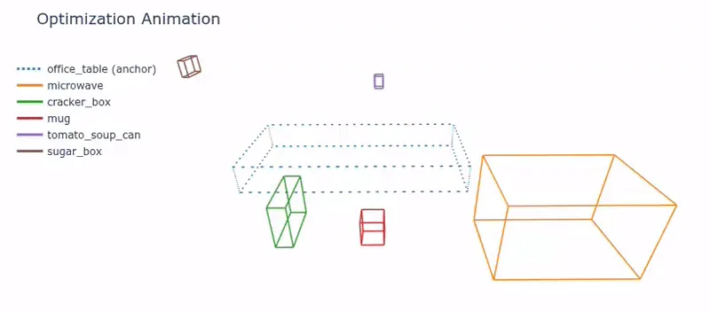
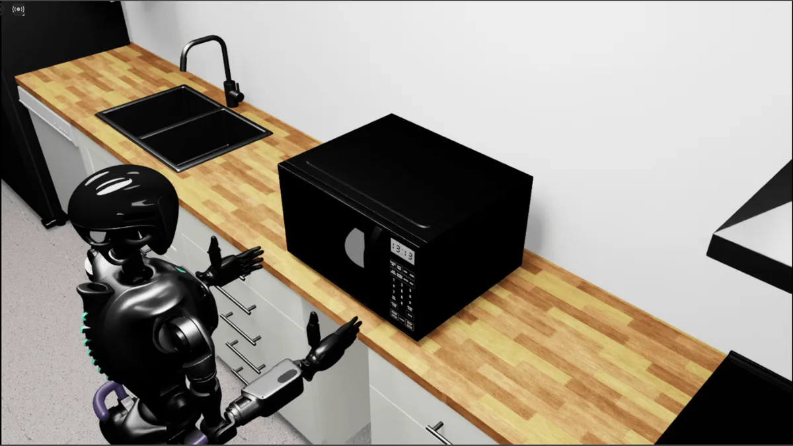
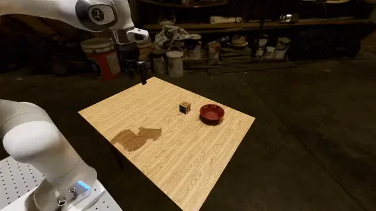
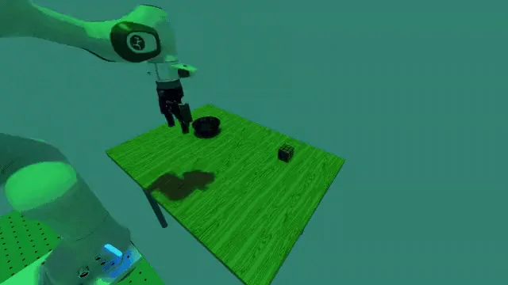
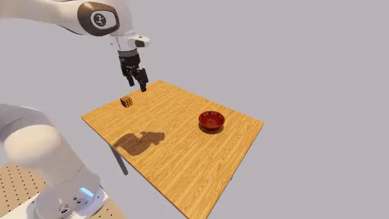
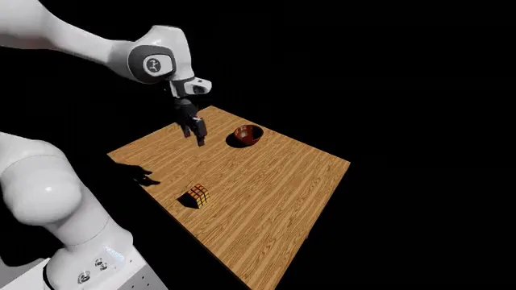
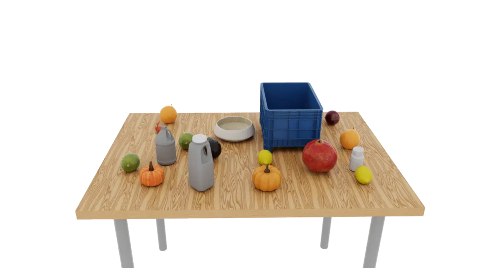
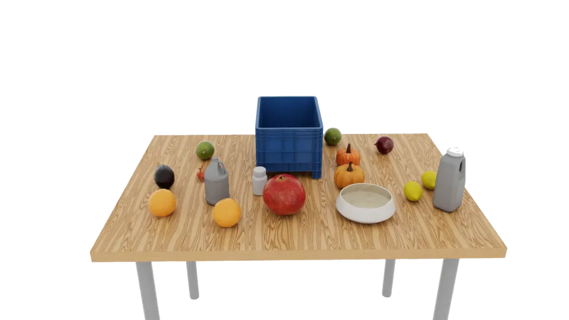
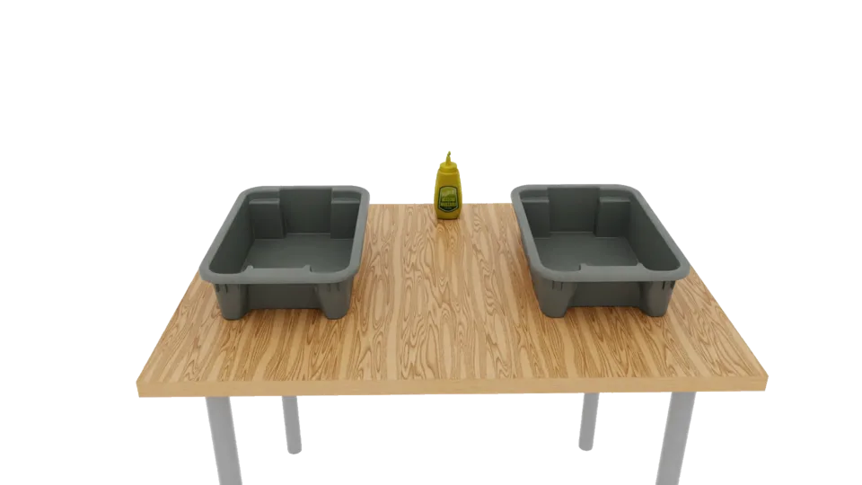
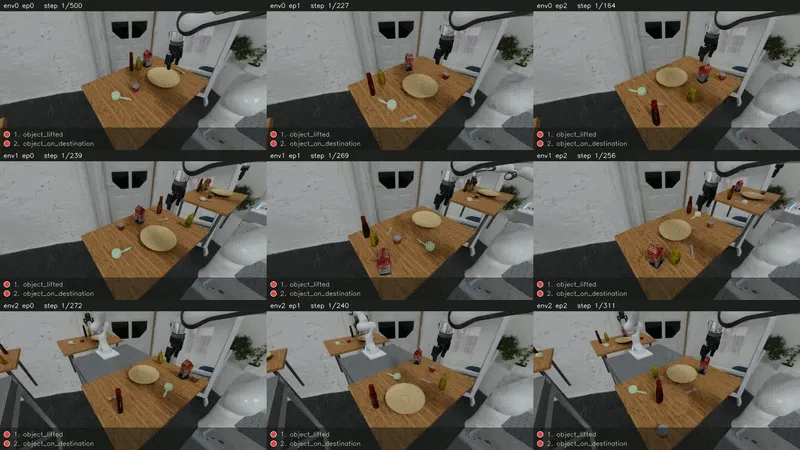

Welcome to Isaac Lab-Arena!#
Overview
NVIDIA Isaac Lab-Arena is an open-source framework for scalable benchmark authoring and robot policy evaluation in simulation.
Not another benchmark or library of benchmarks. Arena extends Isaac Lab with reusable APIs to author robot policy evaluations, execute at scale, and analyze results for actionable feedback.
Features#
{kind=link}
{kind=link}
Execute large-scale parallel policy evaluations#
Large-scale parallel environments
Evaluate one policy concurrently across thousands of heterogeneous (object-level) environments instead of sequential rollouts to speed up policy evaluation. Lightwheel case study reports 10x faster despite using higher fidelity assets. A preliminary camera-free scaling benchmark measured 2,390 environment-steps/s of rollout throughput with 1,024 parallel environments on one RTX 5880 Ada Generation GPU.
{kind=link}
Large-scale multi-node evaluation
Define experiments with multiple policies and tasks. Run them locally or use an orchestrator such as OSMO to distribute across multi-node compute. Arena returns aggregate metrics for a high-level summary and per-episode results for detailed analysis. A preliminary OSMO scaling benchmark showed that active execution time decreased nearly in proportion to the number of GPUs used to run independent Runs concurrently.
Define experiment
- Tasks
- 20 RoboLab tasks
- Policies
- Policy A · Policy B
- Experiment
- 100 episodes / task
→
Run evaluations
Local or distributed compute
→
Collate results
One combined result











Run leading foundation models GR00T, π0.5, or bring your own policy behind a server. Arena exchanges observations and actions through one client contract across processes, GPUs, or machines.
Analyze robustness and why policies fail#
Subtask predicates · The where
Track fine-grained milestones within each subtask—for example, decomposing pick-and-place into grasp, lift, transport, and place—to see where a policy fails.
Before Arena — End-to-end result only. Success: 20%. Failure stage: unknown.
After Arena · predicates — Track progress within every rollout and see where success drops.
Grasp
30.3%
Lift
22.9%
Transport
21.3%
Place
20.0%
Failure stage: Lift. 75 rollouts grasp the object but never lift it.
Sensitivity analysis · The why
Perturb environment factors to reveal policy robustness and get actionable feedback that can inform the next round of targeted policy learning.
Before Arena — End-to-end result only. Success: 20%. Root cause: unknown.
After Arena · sensitivity analysis — View which factors the policy is sensitive to. The same failure can have different root causes and require different fixes.
The failure cliff identifies a robustness gap and enables targeted policy improvement.
The failure cliff identifies a robustness gap and enables targeted policy improvement.
Why Isaac Lab-Arena#
Simulation can provide early feedback before expensive real-world deployment.
But as policy evaluation expands across tasks, scenes, conditions, and robot embodiments,standalone environments, custom scripts, and sequential runs do not scale.
Support#
GitHub Discussions
GitHub Issues
Omniverse Discord
NVIDIA Forums
Project resources#
Contribution workflow
Publishing workflow
Citation guidance
Apache 2.0 license
Acknowledgements#
Isaac Lab-Arena builds on NVIDIA Isaac Lab, with the evaluation and task layers designed in close collaboration with Lightwheel. We thank the Isaac Lab team and the broader robotics community for their foundational work.
Isaac Lab-Arena was built in collaboration with the authors of Robolab (website, paper).